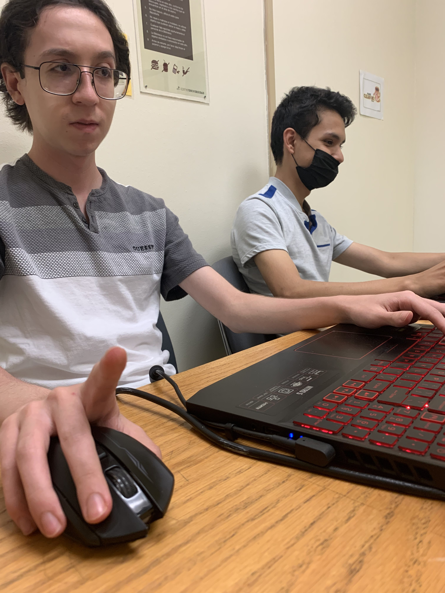

¡Lanzamiento del sitio web de Proyecto Tocho!
Después de meses de desarollar video juegos, hemos decidido crear una página web dedicada a la publicación de actualizaciones de nuestros futuros proyectos. También servirá como un centro para acceder a todos nuestros juegos y ver más información sobre nosotros.
Más a fondo
Proyecto Tocho surgió como un chiste interno por uno de los programadores durante el desarrollo de Ajedrez Tocho, no obstante, pronto se convirtió en nuestra marca e imagen. El propósito de Tocho Inc. es desarrollar videojuegos divertidos que sean accesibles para todo el mundo, pero que al mismo tiempo, tengan un desarrollo no limitado por ningún estándar social, siguiendo nuestras propias ideas e intereses.
Esta página servirá como un portal en donde podrás acceder facilmente a todo lo relacionado con Proyecto Tocho y Tocho Inc., siguenos en nuestras redes sociales para estar al tanto de las últimas noticias de nuestros futuros proyectos, o mandanos un mensaje para hacer preguntas o dar sugerencias.